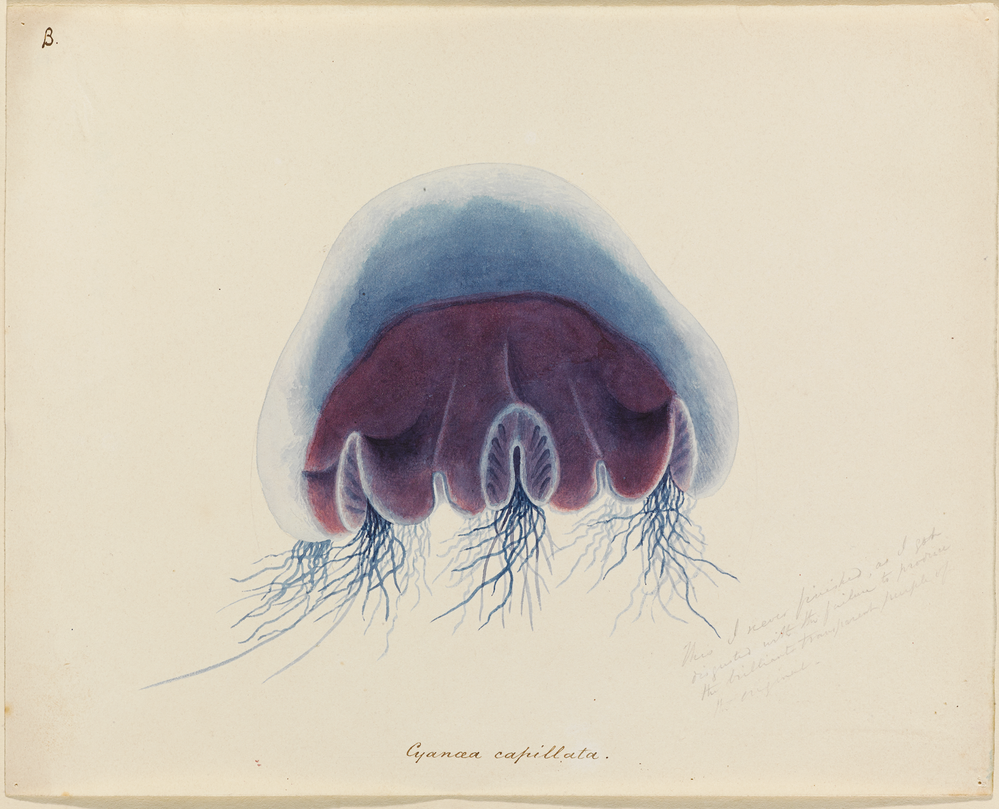
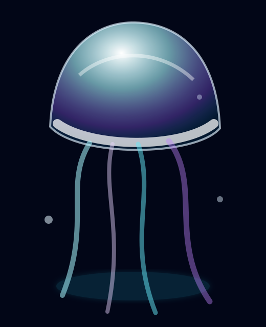

단순 CSS 오브젝트를 inline SVG 기반의 3D asset-like jellyfish로 고도화했습니다. shell, rim, inner volume, caustics, oral arms, tentacles, bubbles 레이어가 pointer parallax에 반응합니다.
Public jellyfish reference를 저장하고, HTML에서는 외부 이미지 복사 대신 inline SVG/CSS 레이어로 3D asset-like 형태를 재구성합니다.

